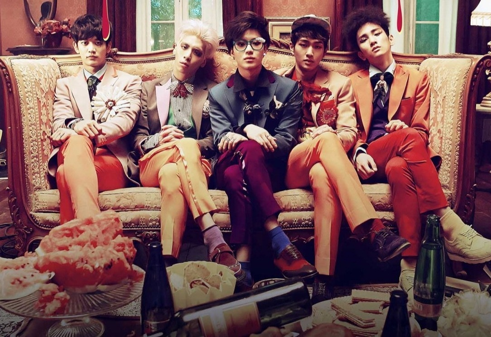

Origem
Quem é SHINee?
Shinee (estilizado como SHINee, em coreano 샤이니) é um boy-group sul-coreano formado pela SM Entertainment em 2008. A popularidade do grupo em seu país nativo rendeu-lhes numerosos elogios e o título de "Príncipes do K-pop". A formação original do grupo consistia em Onew, Jonghyun, Key, Minho e Taemin. Jonghyun faleceu em 18 de dezembro de 2017.
Shinee foi introduzido como um grupo de R&B contemporâneo com o objetivo de ser tendência em todas as áreas da música, moda, dança, etc, e estreou em maio de 2008 com o single "누난 너무 예뻐 (Replay)", retirado de seu primeiro extended play Replay. O grupo ganhou atenção por iniciar uma tendência de moda entre os alunos, que a mídia chamou de "Shinee Trend". Em agosto de 2008, o grupo lançou seu primeiro álbum de estúdio em coreano, intitulado The Shinee World, que ganhou o "Newcomer Album of the Year" no Golden Disk Awards.
Shinee consolidou ainda mais sua popularidade na cena da música sul-coreana com os singles "Ring Ding Dong" e "Lucifer". "Ring Ding Dong" figurou em vários gráficos de música coreana e ganhou popularidade em toda a Ásia. "Lucifer", de seu segundo álbum de mesmo nome, foi nomeada para o Best Dance Performance Award no Mnet Asian Music Awards em 2010 por sua coreografia excepcional. Em 2012 o grupo lançou Sherlock, que se tornou o quinto álbum mais vendido do ano com mais de 180 mil cópias vendidas.
Em 2013, o grupo lançou o seu terceiro álbum dividido em duas partes, intitulado The Misconceptions of Us (Dream Girl e Why So Serious). Em 2015, o grupo lançou seu quarto álbum, Odd. Sobre o álbum o colunista da Billboard Jeff Benjamin, comentou: "SHINee é sem dúvidas o mais emocionante quando está experimentando novos estilos", e também deu uma revisão profunda para todas as músicas do álbum, provando a popularidade do grupo no mundo inteiro. Seus lançamentos foram sucedidos por 1 of 1 (2016) – seu último lançamento com a sua formação original –, The Story of Light (2018), e Don't Call Me (2021).
Integrantes
- Onew (온유) – Líder e vocalista principal.
- Key (키) – Rapper líder, dançarino líder e vocalista líder.
- Minho - (민호) – Visual, rapper principal e vocalista.
- Taemin - (태민) – Dançarino principal e vocalista líder.
Ex-integrante
- Jonghyun (종현) – Vocalista principal.
Características artísticas
Shinee são reconhecidos por sua abordagem inovadora em relação à música e coreografia incomparável, além de serem considerados uns dos melhores vocalistas e dançarinos no pop coreano. De acordo com a mídia, SHINee são conhecidos por suas boas performances vocais e coreografias complexas (apelidados de CD-Nee como uma referência para os seus desempenhos vocais como o áudio do álbum), mas também por seu tipo único de música que é bastante diferente do K-pop habitual.
Estilo musical
O gênero musical predominante do grupo é o R&B contemporâneo. No entanto, eles também são conhecidos por suas experiências com gêneros como funk rock, hip hop e EDM.
Eu aprendi muito poucas coisas que podemos fazer como um grupo que não seria possível se eu estivesse sozinho. Então, quando nós trabalhamos juntos, tentamos coisas mais desafiadoras com tudo. Mesmo se questionarmos se podemos realizá-lo, nós tentamos sempre. Como SHINee, temos de continuar a luta e fazer as coisas que são um pouco mais sofisticadas e detalhadas.
– Jonghyun discutindo os estilos musicais do grupo.
Discografia
Álbuns de estúdio
- The SHINee World / A.Mi.Go (2008)
- Lucifer / Hello (2010)
- The Misconceptions of Us (Chapter 1. / Chapter 2.) (2013)
- Chapter 1. Dream Girl – The Misconceptions of You
- Chapter 2. Why So Serious? – The Misconceptions of Me
- Odd / Married to the Music (2015)
- 1 of 1 / 1 and 1 (2016)
- The Story of Light (2018)
- Don't Call Me (2021)
EPs
- Replay (2008)
- Romeo (2009)
- 2009, Year of Us (2009)
- Sherlock (2012)
- Everybody (2013)